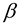
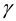

Consider that y is a node in a binary search tree and left child of y is x. Subtree is the right subtree of y. , are the left subtree and right subtree of x respectively.
When the right rotation is applied on the node y, the following occurs:
• RIGHT-ROTATE makes right child of x as left child of y.
• y’s parent is set as x’s parent
• Finally, RIGHT-ROTATE makes y as right child of the x and x as parent of y so that x becomes the new root of the subtree.
The pseudo code for RIGHT-ROTATE is as follows:
RIGHT-ROTATE (T, y)
1. x = y.left // set x
2. y.left = x.right
3. if x.right ≠ T.nil
4. x.right.p = y
5. x.p = y.p // link y’s parent to x
6. if y.p = T.nil
7. T.root = x
8. elseif y = = y.p.right
9. y.p.right = x
10. else y.p.left = x
11. x.right = y // put y on x’s right
12. y.p = x
The following is the given binary search tree:
Consider a, b and c to be the arbitrary nodes of sub trees ,  and respectively.
To understand easily, Assume that, and has only node a, node b and node c respectively.
Apply left rotation on node x and then the tree is as follows:
Now, Following changes in depths of a, b, and c are observed after left rotation:
• Depth of node a is increased by 1.
• Depth of node b is remains same.
• Depth of node c is decreased by 1.